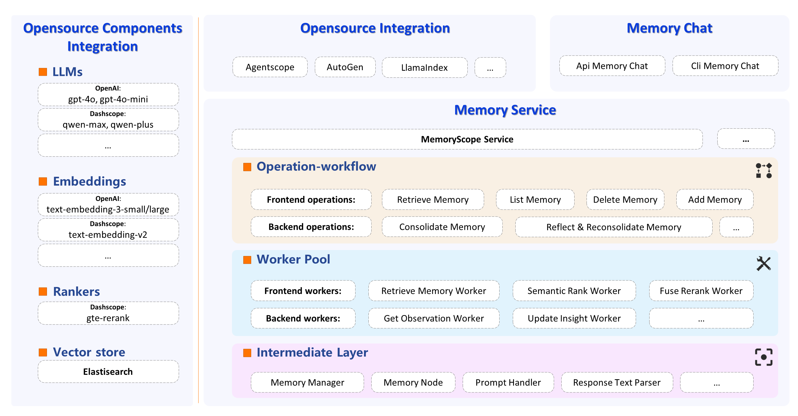

MemoryScope Documentation
Welcome to MemoryScope Tutorial
MemoryScope provides LLM chatbots with powerful and flexible long-term memory capabilities, offering a framework for building such abilities. It can be applied to scenarios like personal assistants and emotional companions, continuously learning through long-term memory to remember users’ basic information as well as various habits and preferences. This allows users to gradually experience a sense of “understanding” when using the LLM.
Framework
💾 Memory Database: MemoryScope is equipped with a vector database (default is ElasticSearch) to store all memory fragments recorded in the system.
🔧 Worker Library: MemoryScope atomizes the capabilities of long-term memory into individual workers, including over 20 workers for tasks such as query information filtering, observation extraction, and insight updating.
🛠️ Operation Library: Based on the worker pipeline, it constructs the operations for memory services, realizing key capabilities such as memory retrieval and memory consolidation.
Memory Retrieval: Upon arrival of a user query, this operation returns the semantically related memory pieces
and/or those from the corresponding time if the query involves reference to time. - Memory Consolidation: This operation takes in a batch of user queries and returns important user information extracted from the queries as consolidated observations to be stored in the memory database. - Reflection and Re-consolidation: At regular intervals, this operation performs reflection upon newly recorded observations to form and update insights. Then, memory re-consolidation is performed to ensure contradictions and repetitions among memory pieces are properly handled.
MemoryScope Tutorial
MemoryScope API Reference